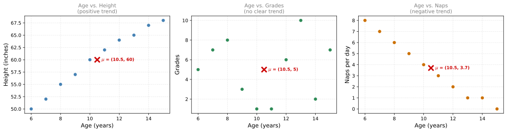
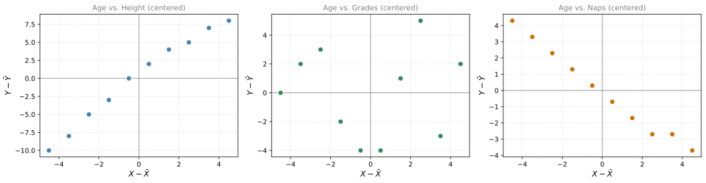
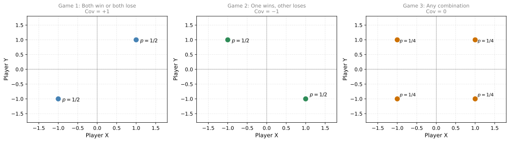
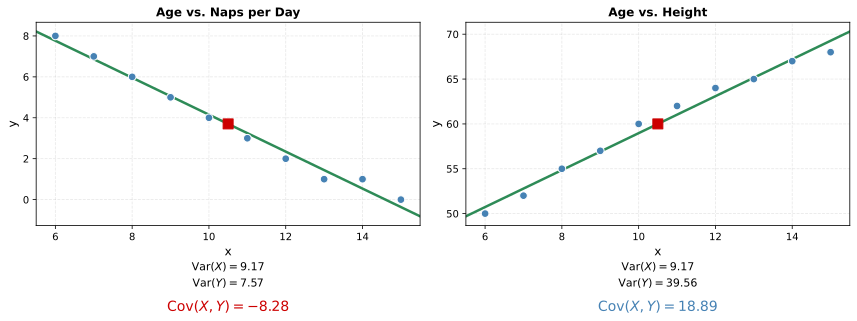
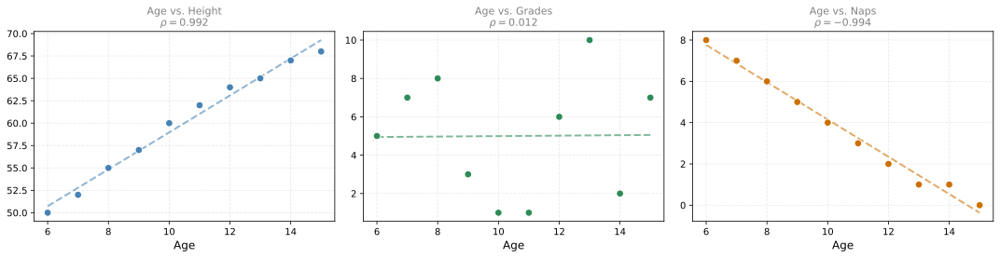
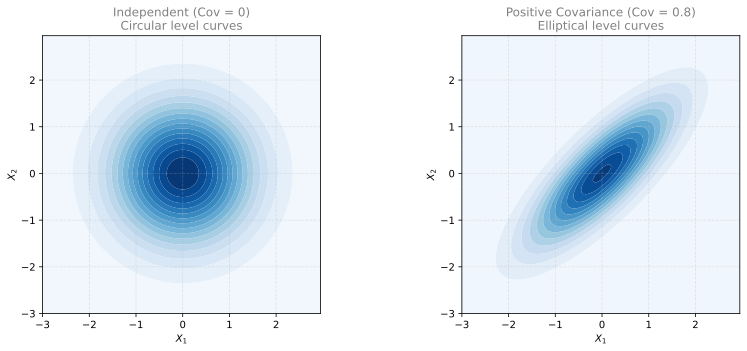
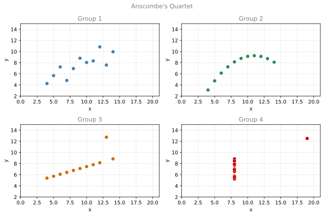
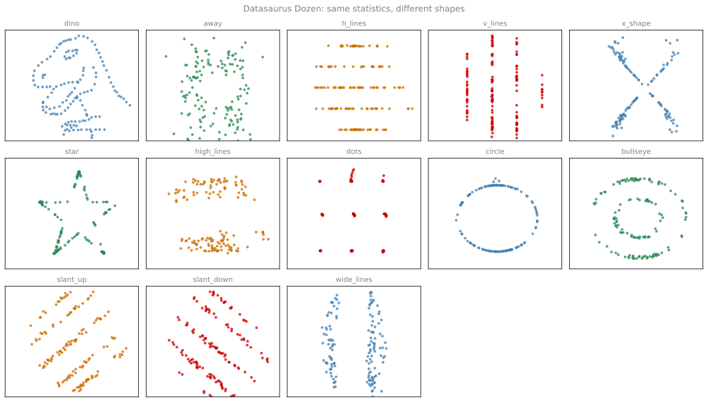

Covariance and Correlation
probability
Each distribution has its own expected value and its own variance. But when you have two variables, there is something these measures do not capture:…
Each distribution has its own expected value and its own variance. But when you have two variables, there is something these measures do not capture: the relationship between them. As you might expect, the age of a child and their height are related (older children tend to be taller). How do we measure this? With a concept called covariance.
Motivation: Three Relationships
Consider a discrete random variable \(X\) representing the age of a child, and three other variables:
- \(Y_1\) = height of the child (in inches)
- \(Y_2\) = grades on a test
- \(Y_3\) = number of naps per day
Here is the data for 10 children:
The red cross marks the mean \((\bar{X}, \bar{Y})\) in each plot. You can see three different patterns:
- Age vs. Height: as age increases, height increases (points go up to the right).
- Age vs. Grades: no clear pattern (points are scattered randomly).
- Age vs. Naps: as age increases, naps decrease (points go down to the right).
The mean and variance of each variable individually cannot capture these relationships. We need a new measure.
Building Intuition for Covariance
Step 1: Center the Data
First, center both variables by subtracting their means. This moves the “balance point” to the origin:

Step 2: Look at the Signs of the Products
After centering, look at the sign of each point’s coordinates:
Positive covariance (Age vs. Height): When \(X - \bar{X}\) is positive (older than average), \(Y - \bar{Y}\) tends to also be positive (taller than average). When \(X - \bar{X}\) is negative, \(Y - \bar{Y}\) tends to be negative too. The coordinates have the same sign, so their product \((X - \bar{X})(Y - \bar{Y})\) is usually positive.
Near-zero covariance (Age vs. Grades): The signs of \(X - \bar{X}\) and \(Y - \bar{Y}\) have no consistent pattern. Sometimes same sign, sometimes opposite. The products cancel out.
Negative covariance (Age vs. Naps): When \(X - \bar{X}\) is positive, \(Y - \bar{Y}\) tends to be negative (and vice versa). The coordinates have opposite signs, so their product is usually negative.
Step 3: Average the Products
The covariance is the average of all these products:
\[ \text{Cov}(X, Y) = \frac{1}{n-1} \sum_{i=1}^{n} (x_i - \bar{x})(y_i - \bar{y}) \]
Or equivalently, in terms of expected values:
\[ \text{Cov}(X, Y) = \mathbb{E}\left[(X - \mathbb{E}[X])(Y - \mathbb{E}[Y])\right] \]
Computing Covariance
Age vs. Height (Positive Covariance)
Older children tend to be taller, so we expect both variables to move in the same direction. Let’s verify this with the computation table:
\(\displaystyle \bar{X} = 10.5, \quad \bar{Y} = 60\)
| Age \((x)\) | Height \((y)\) | \(x_i - \bar{x}\) | \(y_i - \bar{y}\) | \((x_i - \bar{x})(y_i - \bar{y})\) |
|---|---|---|---|---|
| 6 | 50 | -4.5 | -10 | 45 |
| 7 | 52 | -3.5 | -8 | 28 |
| 8 | 55 | -2.5 | -5 | 12.5 |
| 9 | 57 | -1.5 | -3 | 4.5 |
| 10 | 60 | -0.5 | 0 | -0 |
| 11 | 62 | 0.5 | 2 | 1 |
| 12 | 64 | 1.5 | 4 | 6 |
| 13 | 65 | 2.5 | 5 | 12.5 |
| 14 | 67 | 3.5 | 7 | 24.5 |
| 15 | 68 | 4.5 | 8 | 36 |
| \(\sum = 170\) |
\(\displaystyle \text{Cov}(X, Y_1) = \frac{\sum (x_i - \bar{x})(y_i - \bar{y})}{n-1} = \frac{170}{9} = 18.8889 > 0\)
The covariance is positive because when age grows, height grows too.
Age vs. Naps (Negative Covariance)
Younger children nap more, so as age goes up, naps go down. We expect the products of the deviations to be mostly negative:
\(\displaystyle \bar{X} = 10.5, \quad \bar{Y} = 3.7\)
\(\displaystyle \text{Cov}(X, Y_3) = \frac{1}{n-1} \sum (x_i - \bar{x})(y_i - \bar{y}) = \frac{-74.5}{9} = -8.28\)
The covariance is negative because as age increases, naps per day decrease.
Age vs. Grades (Near-Zero Covariance)
There is no obvious pattern between age and test grades in this group. The positive and negative products should roughly cancel out:
\(\displaystyle \bar{X} = 10.5, \quad \bar{Y} = 5.0\)
\(\displaystyle \text{Cov}(X, Y_2) = \frac{1}{n-1} \sum (x_i - \bar{x})(y_i - \bar{y}) = \frac{1.0}{9} = 0.1\)
The covariance is very close to zero because age and grades have no consistent linear relationship.
Summary
| Variables | Relationship | Covariance |
|---|---|---|
| Age vs. Height | Positive (grow together) | \(> 0\) |
| Age vs. Grades | None (no pattern) | \(\approx 0\) |
| Age vs. Naps | Negative (one grows, other shrinks) | \(< 0\) |
\[ \text{Cov}(X, Y) = \mathbb{E}\left[(X - \mathbb{E}[X])(Y - \mathbb{E}[Y])\right] \]
- Positive covariance: variables tend to move in the same direction.
- Negative covariance: variables tend to move in opposite directions.
- Near-zero covariance: no consistent linear relationship.
Review Questions
1. What does covariance measure?
TipAnswer
Covariance measures the direction of the linear relationship between two variables. It tells you whether the variables tend to increase together (positive), decrease together / move in opposite directions (negative), or have no consistent linear pattern (near zero).
1. If the covariance between two variables is 0, does that mean they are independent?
TipAnswer
Not necessarily. Covariance only measures linear relationships. Two variables can have a strong non-linear relationship (for example, \(Y = X^2\)) and still have zero covariance. Zero covariance means no linear trend, but other patterns may exist.
1. Why do you center the data (subtract means) before computing covariance?
TipAnswer
Centering shifts the data so the mean is at the origin. This lets you use the sign of the coordinates to determine whether points tend to fall in the “same sign” quadrants (positive relationship) or “opposite sign” quadrants (negative relationship). Without centering, the location of the data would dominate and obscure the relationship.
1. Two variables have covariance \(-15\). What does this tell you about their scatter plot?
TipAnswer
The scatter plot shows a downward trend: as one variable increases, the other tends to decrease. The negative sign means the centered coordinates tend to have opposite signs (when \(X\) is above average, \(Y\) is below average, and vice versa).
Covariance of a Probability Distribution
So far we computed covariance from a data set by averaging the products of deviations. But what if our data comes from a probability distribution with unequal probabilities? Then we take a weighted average instead.
Three Games: Same Expectation, Same Variance, Different Covariance
Players \(X\) and \(Y\) play three different games, each time winning or losing $1. How similar are these games for each player individually?
For all three games, each player can win $1 or lose $1 with equal probability:
\(\displaystyle \mathbb{E}[X] = \frac{1}{2}(1) + \frac{1}{2}(-1) = 0, \quad \mathbb{E}[Y] = 0\)
\(\displaystyle \text{Var}(X) = \frac{1}{2}(1-0)^2 + \frac{1}{2}(-1-0)^2 = 1, \quad \text{Var}(Y) = 1\)
So the games are identical from each player’s perspective: expected winnings of 0 and variance of 1. Yet the games feel very different because of the relationship between the players. This is what covariance captures.

Let’s compute the covariance for each game. Since \(\mu_X = \mu_Y = 0\), centering changes nothing:
Game 1 — both win or both lose:
| \(x\) | \(y\) | \(x - \mu_X\) | \(y - \mu_Y\) | \((x-\mu_X)(y-\mu_Y)\) |
|---|---|---|---|---|
| 1 | 1 | 1 | 1 | 1 |
| −1 | −1 | −1 | −1 | 1 |
| \(\sum\) | 2 |
\(\displaystyle \text{Cov}(X, Y) = \frac{2}{2} = 1\)
Game 2 — one wins, other loses:
| \(x\) | \(y\) | \(x - \mu_X\) | \(y - \mu_Y\) | \((x-\mu_X)(y-\mu_Y)\) |
|---|---|---|---|---|
| 1 | −1 | 1 | −1 | −1 |
| −1 | 1 | −1 | 1 | −1 |
| \(\sum\) | −2 |
\(\displaystyle \text{Cov}(X, Y) = \frac{-2}{2} = -1\)
Game 3 — all four possibilities:
| \(x\) | \(y\) | \(x - \mu_X\) | \(y - \mu_Y\) | \((x-\mu_X)(y-\mu_Y)\) |
|---|---|---|---|---|
| 1 | 1 | 1 | 1 | 1 |
| −1 | −1 | −1 | −1 | 1 |
| 1 | −1 | 1 | −1 | −1 |
| −1 | 1 | −1 | 1 | −1 |
| \(\sum\) | 0 |
\(\displaystyle \text{Cov}(X, Y) = \frac{0}{4} = 0\)
All three games have the same \(\mathbb{E}[X]\), \(\mathbb{E}[Y]\), \(\text{Var}(X)\), and \(\text{Var}(Y)\). Only covariance tells them apart.
Game 4: Unequal Probabilities
In Games 1-3, each outcome was equally likely, so we computed covariance as a simple average:
\[ \text{Cov}(X, Y) = \frac{\sum (x_i - \mu_x)(y_i - \mu_y)}{n} = \underbrace{\frac{1}{n}}_{\text{equal probabilities}} \sum (x_i - \mu_x)(y_i - \mu_y) \]
But what if the outcomes have different probabilities? Then \(\frac{1}{n}\) no longer works. Instead, we weight each term by its probability:
\[ \text{Cov}(X, Y) = \sum_i \underbrace{p_{XY}(x_i, y_i)}_{\text{unequal probabilities}} (x_i - \mu_x)(y_i - \mu_y) \]
This simplifies to a convenient equivalent form:
\[ \text{Cov}(X, Y) = \mathbb{E}[XY] - \mathbb{E}[X]\,\mathbb{E}[Y] \]
Now consider a game where the outcomes have different probabilities:
- Both win $1 with probability \(\frac{1}{2}\)
- Both lose $1 with probability \(\frac{1}{3}\)
- Neither wins nor loses with probability \(\frac{1}{6}\)
\(\displaystyle \mu_X = \mu_Y = \frac{1}{2}(1) + \frac{1}{3}(-1) + \frac{1}{6}(0) = \frac{1}{6}\)
\(\displaystyle \text{Var}(X) = \text{Var}(Y) = 0.8056\)
Covariance calculation:
| \(x_i\) | \(y_i\) | \(p_i\) | \(x_i - \mu_X\) | \(y_i - \mu_Y\) | \(p_i(x_i-\mu_X)(y_i-\mu_Y)\) |
|---|---|---|---|---|---|
| 1 | 1 | 0.5 | 0.8333 | 0.8333 | 0.3472 |
| -1 | -1 | 0.3333 | -1.167 | -1.167 | 0.4537 |
| 0 | 0 | 0.1667 | -0.1667 | -0.1667 | 0.00463 |
\(\displaystyle \text{Cov}(X, Y) = \mathbb{E}[XY] - \mathbb{E}[X]\,\mathbb{E}[Y] = 0.8333 - \left(\tfrac{1}{6}\right)^2 = 0.8056\)
The covariance is positive — as expected, since the players tend to win and lose together.
NoteCovariance generalizes variance
Notice that \(\text{Cov}(X, X) = \mathbb{E}[X^2] - (\mathbb{E}[X])^2 = \text{Var}(X)\). Covariance with unequal probabilities uses the same weighted-sum idea as variance, but applied to two different variables.
Review Questions
1. In the three games example, why can’t expected value or variance alone distinguish the games?
TipAnswer
Because each player individually has the same distribution in all three games: win $1 or lose $1 with equal probability. This gives \(\mathbb{E}[X] = 0\) and \(\text{Var}(X) = 1\) regardless of the game. The difference is in how the two players relate to each other, which only covariance captures.
1. How does the covariance formula change when outcomes have unequal probabilities?
TipAnswer
Instead of a simple average \(\frac{1}{n}\sum(x_i - \bar{x})(y_i - \bar{y})\), you take a weighted average: \(\text{Cov}(X,Y) = \sum_i p_i(x_i - \mu_X)(y_i - \mu_Y)\). Each product of deviations is multiplied by its probability rather than divided equally by \(n\).
1. Show that \(\text{Cov}(X, X) = \text{Var}(X)\).
TipAnswer
\(\text{Cov}(X, X) = \mathbb{E}[X \cdot X] - \mathbb{E}[X]\,\mathbb{E}[X] = \mathbb{E}[X^2] - (\mathbb{E}[X])^2 = \text{Var}(X)\).
Covariance Matrix
When you have more than two variables, you need to track the variance of each variable and the covariance of every pair. The covariance matrix organizes all of this into a single matrix.
NoteSee Also
The covariance matrix plays a central role in dimensionality reduction. For a deeper treatment of how eigenvectors of the covariance matrix give the best projection directions (PCA), see Dimensionality Reduction and PCA in the linear algebra notes.
For two variables \(X\) and \(Y\), the covariance matrix is:
\[ \Sigma = \begin{bmatrix} \text{Var}(X) & \text{Cov}(X, Y) \\ \text{Cov}(Y, X) & \text{Var}(Y) \end{bmatrix} \]
The diagonal entries are the variances. The off-diagonal entries are the covariances. Since \(\text{Cov}(X, Y) = \text{Cov}(Y, X)\), the matrix is always symmetric.
Examples from Earlier
Age vs. Height:
\(\displaystyle \Sigma = \begin{bmatrix} \text{Var}(X) & \text{Cov}(X,Y) \\ \text{Cov}(Y,X) & \text{Var}(Y) \end{bmatrix} = \begin{bmatrix} 9.17 & 18.89 \\ 18.89 & 39.56 \end{bmatrix}\)
Game 1 (both win or both lose): \(\text{Var}(X) = \text{Var}(Y) = 1\), \(\text{Cov}(X,Y) = 1\)
\(\displaystyle \Sigma = \begin{bmatrix} 1 & 1 \\ 1 & 1 \end{bmatrix}\)
Game 2 (one wins, other loses): \(\text{Var}(X) = \text{Var}(Y) = 1\), \(\text{Cov}(X,Y) = -1\)
\(\displaystyle \Sigma = \begin{bmatrix} 1 & -1 \\ -1 & 1 \end{bmatrix}\)
Generalizing to More Variables
For three variables \(X\), \(Y\), \(Z\):
\[ \Sigma = \begin{bmatrix} \text{Var}(X) & \text{Cov}(X, Y) & \text{Cov}(X, Z) \\ \text{Cov}(Y, X) & \text{Var}(Y) & \text{Cov}(Y, Z) \\ \text{Cov}(Z, X) & \text{Cov}(Z, Y) & \text{Var}(Z) \end{bmatrix} \]
And for \(n\) variables \(X_1, X_2, \ldots, X_n\), the covariance matrix is an \(n \times n\) symmetric matrix:
\[ \Sigma_{ij} = \text{Cov}(X_i, X_j) \]
where \(\Sigma_{ii} = \text{Var}(X_i)\) on the diagonal.
For example, with 5 variables \(V, W, X, Y, Z\), the covariance matrix is \(5 \times 5\):
\[ \Sigma = \begin{bmatrix} \text{Var}(V) & \text{Cov}(V,W) & \text{Cov}(V,X) & \text{Cov}(V,Y) & \text{Cov}(V,Z) \\ \text{Cov}(W,V) & \text{Var}(W) & \text{Cov}(W,X) & \text{Cov}(W,Y) & \text{Cov}(W,Z) \\ \text{Cov}(X,V) & \text{Cov}(X,W) & \text{Var}(X) & \text{Cov}(X,Y) & \text{Cov}(X,Z) \\ \text{Cov}(Y,V) & \text{Cov}(Y,W) & \text{Cov}(Y,X) & \text{Var}(Y) & \text{Cov}(Y,Z) \\ \text{Cov}(Z,V) & \text{Cov}(Z,W) & \text{Cov}(Z,X) & \text{Cov}(Z,Y) & \text{Var}(Z) \end{bmatrix} \]
Notice the structure: variances line the diagonal, and every off-diagonal entry is a covariance between two different variables. The matrix is always symmetric because \(\text{Cov}(A, B) = \text{Cov}(B, A)\).
Computed Example (3 Variables)
Age, Height, Naps (three variables):
\(\displaystyle \Sigma = \begin{bmatrix} 9.17 & 18.89 & -8.28 \\ 18.89 & 39.56 & -17.22 \\ -8.28 & -17.22 & 7.57 \end{bmatrix}\)
Reading this matrix: the positive values (Age-Height) show variables that grow together, while the negative values (Age-Naps, Height-Naps) show variables that move in opposite directions.
The covariance matrix is fundamental in statistics and machine learning. It appears in multivariate Gaussian distributions, principal component analysis (PCA), and many other methods that deal with multiple variables simultaneously.
Review Questions
1. What goes on the diagonal of a covariance matrix?
TipAnswer
The variances of each variable: \(\Sigma_{ii} = \text{Var}(X_i)\). The diagonal entry for variable \(X_i\) is the covariance of \(X_i\) with itself, which equals its variance.
1. Why is the covariance matrix always symmetric?
TipAnswer
Because \(\text{Cov}(X, Y) = \text{Cov}(Y, X)\). The order does not matter in the product \((x_i - \mu_X)(y_i - \mu_Y) = (y_i - \mu_Y)(x_i - \mu_X)\), so entry \((i, j)\) always equals entry \((j, i)\).
1. For a data set with 5 variables, what is the size of the covariance matrix and how many unique covariance values (not variances) does it contain?
TipAnswer
The matrix is \(5 \times 5\). It has 5 variances on the diagonal. The remaining entries are covariances, but since the matrix is symmetric, the number of unique covariances is \(\binom{5}{2} = 10\).
Correlation Coefficient
Problem with Covariance: No Bounded Range
Consider the two datasets from earlier:

Ignoring the signs, 18.89 is much larger than 8.28. Does that mean the relationship between age and height is “stronger” than between age and naps? Not necessarily. The covariance depends on the scale of the variables. Heights are measured in tens (50-68), while naps are single digits (0-8). The larger numbers in heights naturally produce a larger covariance.
We cannot compare covariances directly because they have no fixed range. We need a standardized version.
Definition
The correlation coefficient (also called Pearson’s \(\rho\)) normalizes the covariance by dividing by the product of the standard deviations:
\[ \rho_{XY} = \frac{\text{Cov}(X, Y)}{\sigma_X \cdot \sigma_Y} = \frac{\text{Cov}(X, Y)}{\sqrt{\text{Var}(X)} \cdot \sqrt{\text{Var}(Y)}} \]
This value is always between \(-1\) and \(1\):
NoteWhen to Use \(n\) vs. \(n-1\)
There are two contexts for computing variance and covariance:
- Known probability distribution (like the games above): you use the expected value formula \(\text{Cov}(X,Y) = \sum p_i(x_i - \mu_x)(y_i - \mu_y)\). When all outcomes are equally likely, this simplifies to dividing by \(n\). There is no correction needed because you have the complete distribution.
- Sample from a dataset (like the children age/height data): you divide by \(n-1\) (Bessel’s correction). This corrects for the bias introduced by estimating the mean from the same data. This is what pandas and numpy use by default.
The correlation coefficient comes out the same either way, since the same factor appears in both numerator and denominator.
| \(\rho\) | Meaning |
|---|---|
| \(+1\) | Perfect positive linear relationship (points on a line going up) |
| \(0\) | No linear relationship |
| \(-1\) | Perfect negative linear relationship (points on a line going down) |
Computing Correlation for Our Datasets
\(\displaystyle \rho_{X, Y_1} = \frac{18.89}{\sqrt{9.17} \cdot \sqrt{39.56}} = 0.992 \quad \text{(Age vs. Height)}\)
\(\displaystyle \rho_{X, Y_3} = \frac{-8.28}{\sqrt{9.17} \cdot \sqrt{7.57}} = -0.994 \quad \text{(Age vs. Naps)}\)
\(\displaystyle \rho_{X, Y_2} = \frac{0.11}{\sqrt{9.17} \cdot \sqrt{9.78}} = 0.012 \quad \text{(Age vs. Grades)}\)
Despite the large difference in raw covariance (18.89 vs. 8.28), the correlation coefficients have similar magnitudes (~0.99 vs. ~0.99). Both age-height and age-naps have strong linear relationships of similar strength, just in opposite directions. Age-grades has a correlation near zero, confirming no linear trend.

Call Center Example
\(\displaystyle \rho_{X,Y} = \frac{\text{Cov}(X,Y)}{\sigma_X \cdot \sigma_Y} = -0.640\)
The correlation of approximately \(-0.64\) confirms a moderately strong negative linear relationship: longer wait times are associated with lower customer satisfaction.
Summary
| Measure | Formula | Range | What it tells you |
|---|---|---|---|
| Covariance | \(\mathbb{E}[(X-\mu_X)(Y-\mu_Y)]\) | \((-\infty, +\infty)\) | Direction of relationship |
| Correlation | \(\frac{\text{Cov}(X,Y)}{\sigma_X \sigma_Y}\) | \([-1, +1]\) | Direction and strength |
Review Questions
5. Why is correlation preferred over covariance when comparing relationships across different datasets?
TipAnswer
Because covariance depends on the scale of the variables (height in inches vs. height in centimeters would give different covariances for the same data). Correlation normalizes by the standard deviations, producing a dimensionless number between -1 and 1 that allows direct comparison regardless of units or scale.
6. Two datasets have covariances of 500 and 2. Can you conclude that the first has a stronger linear relationship?
TipAnswer
No. The larger covariance might simply reflect larger-scale variables. You need to compute the correlation coefficients to compare the strength of the relationships. It is entirely possible that the dataset with covariance 2 has a correlation closer to \(\pm 1\) than the one with covariance 500.
7. A dataset has \(\rho = -0.95\). What does the scatter plot look like?
TipAnswer
The points lie very close to a straight line with a negative slope (going down from left to right). The value -0.95 is close to -1, indicating a near-perfect negative linear relationship with very little scatter around the trend line.
8. Can two variables have a strong relationship but a correlation of 0?
TipAnswer
Yes. Correlation only measures linear relationships. If \(Y = X^2\) (a perfect parabolic relationship), the correlation can be 0 because there is no linear trend. The variables are perfectly related, just not in a straight-line way.
9. Which of the following statements regarding the correlation coefficient are true? Select all that apply.
- It is a positive real number.
- It can be any real number.
- It measures how linearly correlated two variables are.
- It is a real number between \(-1\) and \(1\).
TipAnswer
c and d. The correlation coefficient always lies between \(-1\) and \(+1\) (so a and b are both wrong). It specifically measures the strength and direction of the linear relationship between two variables. A correlation of 0 does not mean no relationship, only no linear relationship.
10. Suppose that the joint probability distribution of two random variables \(X\) and \(Y\) is: \(P(X=0, Y=0) = 0.2\), \(P(X=0, Y=1) = 0.1\), \(P(X=1, Y=0) = 0.1\), \(P(X=1, Y=1) = 0.6\). What is the covariance between \(X\) and \(Y\)?
- \(-0.04\)
- \(0.11\)
- \(0.02\)
- \(0.04\)
TipAnswer
b. \(\mathbb{E}[X] = 0(0.3) + 1(0.7) = 0.7\). \(\mathbb{E}[Y] = 0(0.3) + 1(0.7) = 0.7\). \(\mathbb{E}[XY] = 0 \cdot 0(0.2) + 0 \cdot 1(0.1) + 1 \cdot 0(0.1) + 1 \cdot 1(0.6) = 0.6\). \(\text{Cov}(X,Y) = \mathbb{E}[XY] - \mathbb{E}[X]\mathbb{E}[Y] = 0.6 - 0.7 \times 0.7 = 0.6 - 0.49 = 0.11\).
Multivariate Gaussian Distribution
You have already learned the normal (Gaussian) distribution for one variable. But what happens when you have more than one variable? The extension is called the multivariate Gaussian distribution, and it appears everywhere in machine learning.
From One Variable to Many
Recall the univariate Gaussian PDF with mean \(\mu\) and standard deviation \(\sigma\):
\[ f(x) = \frac{1}{\sqrt{2\pi}\,\sigma} \exp\left(-\frac{1}{2}\frac{(x - \mu)^2}{\sigma^2}\right) \]
Now suppose you have two variables. For example, \(H\) = height of an adult (inches) and \(W\) = weight of an adult (pounds). If you look at each variable separately (the marginals), both are approximately Gaussian. But what does the joint distribution look like?
Independent vs. Dependent Variables
If the two variables were independent, the joint PDF would simply be the product of the marginals. The resulting surface would be a perfectly symmetric bell (circular level curves when viewed from above).
But height and weight are not independent. Taller people tend to weigh more (positive covariance). This dependence elongates the bell along a diagonal, producing elliptical level curves tilted in the direction of the correlation.

The left plot shows independent variables (covariance = 0): the level curves are circles. The right plot shows positively correlated variables (covariance = 0.8): the level curves are ellipses tilted along the diagonal. The covariance matrix controls this shape.
Formula
The univariate Gaussian PDF (for reference):
\[ f_X(x) = \frac{1}{\sqrt{2\pi}\,\sigma} \exp\left(-\frac{1}{2}\frac{(x - \mu)^2}{\sigma^2}\right) \]
The multivariate Gaussian distribution for a random vector \(\mathbf{x} = [x_1, x_2, \ldots, x_n]^T\) with mean vector \(\boldsymbol{\mu} = [\mu_1, \mu_2, \ldots, \mu_n]^T\) and covariance matrix \(\Sigma\):
\[ f_{\mathbf{X}}(x_1, x_2, \ldots, x_n) = \frac{1}{(2\pi)^{n/2} \, |\Sigma|^{1/2}} \exp\left(-\frac{1}{2}(\mathbf{x} - \boldsymbol{\mu})^T \Sigma^{-1} (\mathbf{x} - \boldsymbol{\mu})\right) \]
Breaking down each component:
| Component | Role |
|---|---|
| \(\mathbf{x} = [x_1, x_2, \ldots, x_n]^T\) | The random vector (all variables together) |
| \(\boldsymbol{\mu} = [\mu_1, \mu_2, \ldots, \mu_n]^T\) | Mean vector (center of the bell in each dimension) |
| \(\Sigma\) | Covariance matrix (controls spread and tilt of the bell) |
| \(|\Sigma|\) | Determinant of the covariance matrix (total volume of spread) |
| \((2\pi)^{n/2} |\Sigma|^{1/2}\) | Normalization constant (ensures the total volume under the surface is 1) |
| \(\Sigma^{-1}\) | Inverse covariance matrix (rescaling and standardization) |
| \((\mathbf{x}-\boldsymbol{\mu})^T \Sigma^{-1} (\mathbf{x}-\boldsymbol{\mu})\) | Mahalanobis distance (how far \(\mathbf{x}\) is from the center, accounting for correlations) |
Comparing with the univariate case:
| Univariate | Multivariate |
|---|---|
| \(x\) (scalar) | \(\mathbf{x}\) (vector) |
| \(\mu\) (scalar) | \(\boldsymbol{\mu}\) (mean vector) |
| \(\sigma^2\) (scalar variance) | \(\Sigma\) (covariance matrix) |
| \(\frac{1}{\sqrt{2\pi}\sigma}\) | \(\frac{1}{(2\pi)^{n/2} |\Sigma|^{1/2}}\) |
| \((x-\mu)^2 / \sigma^2\) | \((\mathbf{x}-\boldsymbol{\mu})^T \Sigma^{-1} (\mathbf{x}-\boldsymbol{\mu})\) |
The key insight: every scalar quantity in the univariate formula is replaced by its matrix/vector equivalent. The variance \(\sigma^2\) becomes the covariance matrix \(\Sigma\). The squared distance \((x-\mu)^2/\sigma^2\) becomes the Mahalanobis distance \((\mathbf{x}-\boldsymbol{\mu})^T \Sigma^{-1} (\mathbf{x}-\boldsymbol{\mu})\), which accounts for correlations between variables.
Role of the Covariance Matrix
The covariance matrix \(\Sigma\) controls the shape and orientation of the distribution:
- Diagonal entries (\(\Sigma_{ii}\)) control the spread along each axis (variances).
- Off-diagonal entries (\(\Sigma_{ij}\)) control the tilt/elongation (covariances).
- Determinant \(|\Sigma|\) captures the overall “volume” of the spread. Larger determinant means more spread out.
- Inverse \(\Sigma^{-1}\) standardizes and rescales the distances, accounting for both variances and correlations.
When the covariance matrix is diagonal (all off-diagonal entries are zero), the variables are independent and the contours are axis-aligned ellipses (or circles if all variances are equal).
Review Questions
11. What shape do the level curves of a bivariate Gaussian take when the two variables are independent?
TipAnswer
Circles (or axis-aligned ellipses if the variances differ). When the covariance is zero, there is no tilt, and each variable spreads independently along its own axis.
12. In the multivariate Gaussian formula, what role does \(\Sigma^{-1}\) play?
TipAnswer
It standardizes and rescales the distance between \(\mathbf{x}\) and \(\boldsymbol{\mu}\), accounting for both the individual variances and the correlations between variables. It transforms the Euclidean distance into the Mahalanobis distance, which measures “how many standard deviations away” a point is in all directions simultaneously.
13. If the covariance matrix has a large determinant, what does that tell you about the distribution?
TipAnswer
The distribution is more spread out (occupies a larger volume in the space). The determinant of the covariance matrix captures the overall scale of the spread. A small determinant means the data is tightly clustered, while a large determinant means it is widely dispersed.
Lab: When Statistics Lie
Summary statistics like the mean, variance, and correlation are powerful tools, but relying solely on these numbers can be misleading. Datasets with identical summary statistics can have wildly different underlying structures. This section demonstrates why you should always supplement numerical summaries with visualization.
The examples below use two well-known datasets: Anscombe’s Quartet and the Datasaurus Dozen. Both are artificially constructed to show that statistics alone can fail to capture important information.
Data files: df_anscombe.csv, datasaurus.csv, utils.py
TipHelper Code (utils.py)
import numpy as np
import pandas as pd
import matplotlib.pyplot as plt
from IPython.display import display
import ipywidgets as widgets
from ipywidgets import interact, HBox, VBox
import matplotlib.gridspec as gridspec
df_anscombe = pd.read_csv('df_anscombe.csv')
df_datasaurus = pd.read_csv("datasaurus.csv")
def plot_anscombes_quartet():
fig, axs = plt.subplots(2, 2, figsize=(8, 5), tight_layout=True)
i = 1
fig.suptitle("Anscombe's quartet", fontsize=16)
for line in axs:
for ax in line:
ax.scatter(df_anscombe[df_anscombe.group == i]['x'],
df_anscombe[df_anscombe.group == i]['y'])
ax.set_title(f'Group {i}')
ax.set_ylim(2, 15)
ax.set_xlim(0, 21)
ax.set_xlabel('x')
ax.set_ylabel('y')
i += 1Anscombe’s Quartet
Anscombe’s Quartet is a famous collection of four datasets that share nearly identical summary statistics but look completely different when plotted.
The dataset has three columns: x, y, and group (numbered 1 through 4). Each group contains 11 observations. Here are the summary statistics for each group:
| mean_x | mean_y | std_x | std_y | correlation | |
|---|---|---|---|---|---|
| group | |||||
| 1 | 9.0 | 7.501 | 3.317 | 2.032 | 0.816 |
| 2 | 9.0 | 7.501 | 3.317 | 2.032 | 0.816 |
| 3 | 9.0 | 7.500 | 3.317 | 2.030 | 0.816 |
| 4 | 9.0 | 7.501 | 3.317 | 2.031 | 0.817 |
All four groups share nearly identical statistics: mean \(x\) = 9, mean \(y \approx 7.5\), std \(x \approx 3.32\), std \(y \approx 2.03\), and correlation \(\approx 0.816\). Based on these numbers alone, you might conclude that all four groups behave the same way. But look at the scatter plots:

The four groups are strikingly different:
- Group 1 shows a straightforward linear relationship.
- Group 2 is a clear non-linear (quadratic) relationship.
- Group 3 has a linear pattern with one extreme outlier.
- Group 4 has all points at a single \(x\) value except for one outlier that drives the correlation.
Identical statistics, wildly different patterns.
Datasaurus Dozen
The Datasaurus Dozen takes this idea even further: 13 datasets that all share nearly identical summary statistics but form completely different shapes.
| Statistic | dino | away | |
|---|---|---|---|
| 0 | Mean x | 54.26 | 54.27 |
| 1 | Mean y | 47.83 | 47.83 |
| 2 | Std x | 16.77 | 16.77 |
| 3 | Std y | 26.94 | 26.94 |
| 4 | Correlation | -0.064 | -0.064 |
The “dino” and “away” datasets have nearly identical statistics. Now see what they actually look like:

Every one of these 13 datasets has approximately the same mean, standard deviation, and correlation. Yet the shapes include a dinosaur, a star, parallel lines, a circle, and many other distinct patterns. No amount of summary statistics would reveal these differences.
The lesson is simple: always visualize your data.